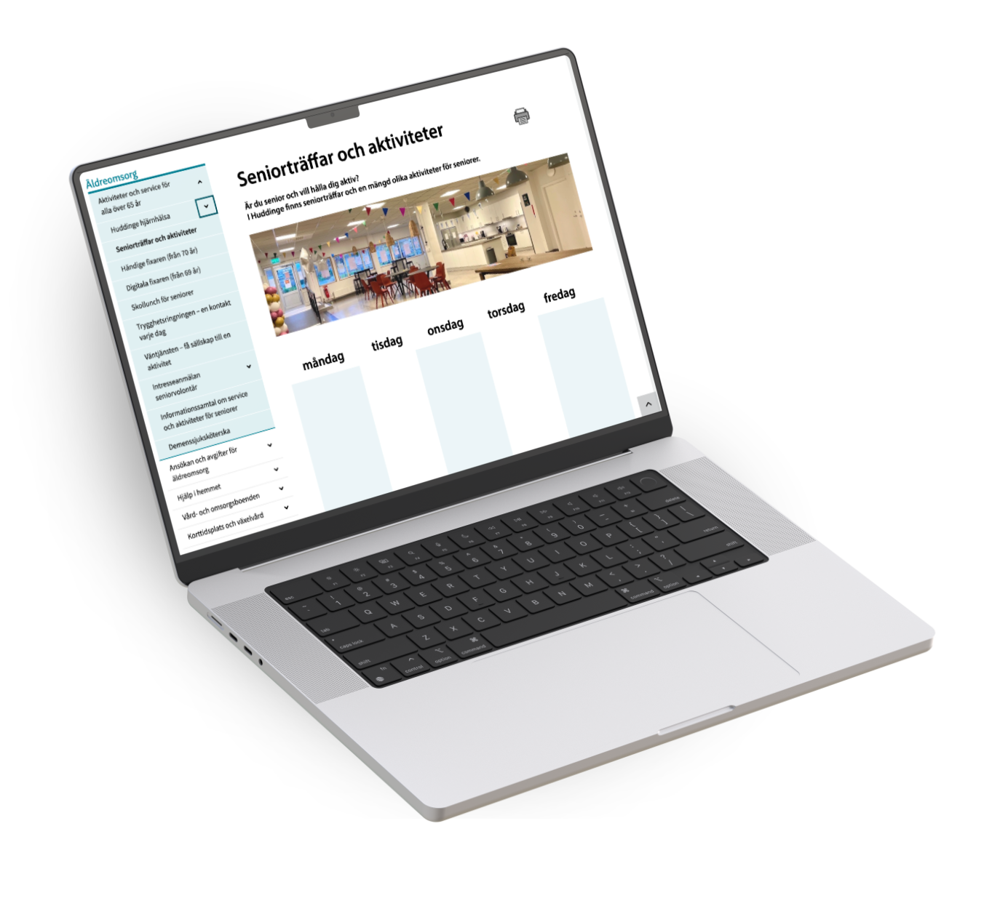
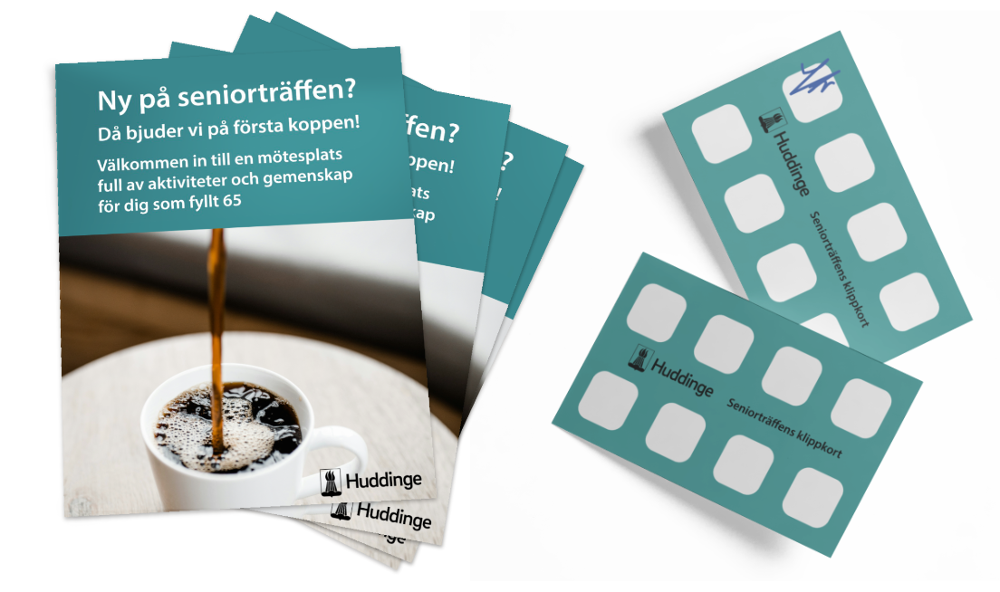

Huddinge kommun
Strengthening community by boosting engagement at Senior Centers


UX, SERVICE DESIGN
A redesigned activity schedule takes the lead position on the Senior Center webpage, making programs instantly visible and significantly improving discoverability, engagement, and overall awareness of what the center offers.
Large‑format posters increase visibility across the Senior Center and surrounding municipal locations, using clear, profile‑aligned visuals that seamlessly integrate with Huddinge’s existing communication style while still standing out enough to capture attention.
A simple coffee stamp card turns an everyday moment into a retention driver — encouraging seniors to return more often, strengthening routine, and building a sense of community through a small but effective behavioral nudge.
Behind the Scenes